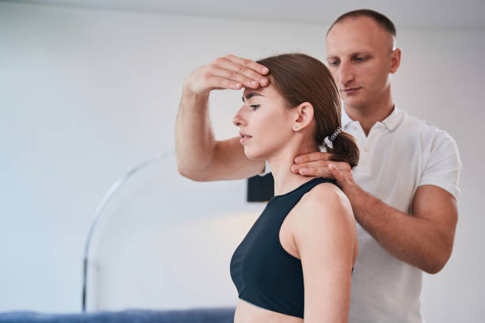

Lumber/Cervical Traction (Spine Decompression)
Traction is a therapeutic technique commonly used in physiotherapy to treat various musculoskeletal conditions, and it can be applied to different regions of the spine, including the lumbar (lower back) and cervical (neck) regions. Traction involves the application of a pulling force to stretch and decompress the spine, aiming to relieve pressure on the spinal discs, nerves, and other structures. Here's an overview of lumbar and cervical traction:
Lumbar Traction:
-
1:Indications:
- Lumbar traction is often used for conditions such as herniated discs, sciatica, degenerative disc disease, and spinal stenosis.
- It aims to reduce pressure on the lumbar discs, alleviate nerve root compression, and promote spinal alignment.
2:Methods:
- Mechanical Traction: Involves the use of a mechanical traction device that applies a controlled pulling force to the lower spine.
- Manual Traction: Physiotherapists may also perform manual traction, using their hands to apply traction to the lumbar spine.
-
Purported Benefits:
- Proponents suggest that cupping may help with pain relief, inflammation reduction, improved blood flow, and relaxation of muscles.
- Some individuals seek cupping for conditions such as musculoskeletal pain, respiratory issues, and general well-being.
3:Considerations:
- Traction force, duration, and frequency are carefully adjusted based on the individual's condition and response to treatment.
- It's important to consider the patient's tolerance and any contraindications before applying lumbar traction.

Cervical Traction:
-
1:Indications:
- Cervical traction is used for conditions such as cervical radiculopathy, herniated discs, neck pain, and muscle tightness.
- It aims to relieve pressure on cervical nerves, improve joint mobility, and reduce symptoms associated with neck disorders.
-
2:Methods:
- Mechanical Traction: Similar to lumbar traction, a mechanical traction device is often used for controlled and specific force application to the cervical spine.
- • Over-the-Door Traction: Involves a harness or head halter attached to a system over a door, allowing for a gentle pull on the neck.
2:Considerations:
- Cervical traction requires careful consideration of the patient's cervical spine stability and any existing pathologies.
- The force applied during cervical traction is typically lower than lumbar traction to avoid excessive strain on the neck.
Precautions and Contraindications:
Both lumbar and cervical traction have specific precautions and contraindications, and they should be used cautiously in certain situations. For example, traction may be contraindicated in cases of recent fractures, spinal instability, severe osteoporosis, and certain cardiovascular conditions.
It's crucial that traction is administered under the supervision of a trained healthcare professional, such as a physiotherapist, who can assess the patient's condition, tailor the treatment plan, and monitor for any adverse effects.
Before undergoing traction or any other therapeutic intervention, individuals should consult with a healthcare professional to determine the appropriateness of the treatment for their specific condition.